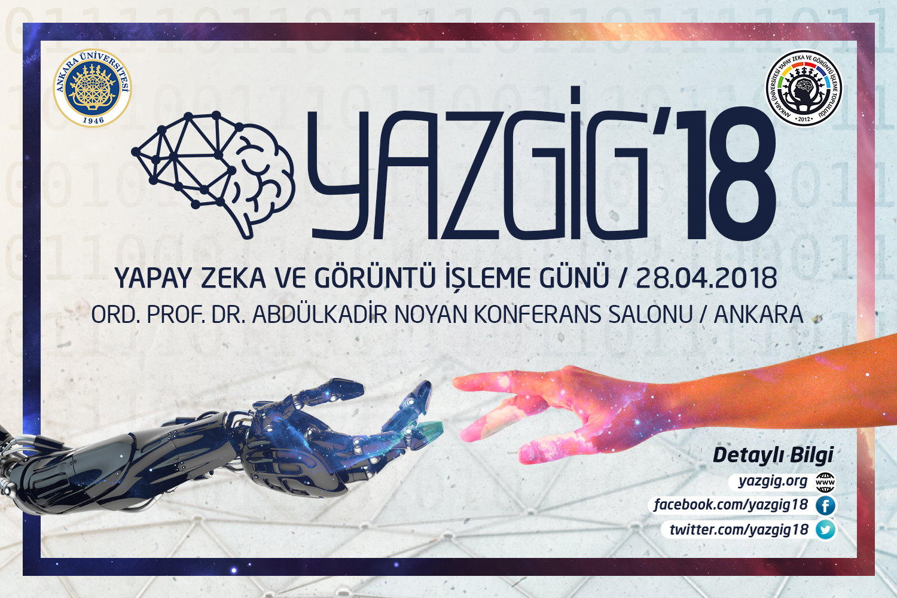

Biz Kimiz ? / YAZGİG Neden Düzenleniyor ?
Yapay Zeka, insanlık tarihi boyunca merak edilen, araştırılan, geliştirilmeye çalışılan konulardan biri olmuştur ve olacaktır. Bir canlının zekasını, özellikle en gelişmiş zeka olan insan zekasını taklit etmeye çalışarak, canlıların yaşamında kolaylıklar sağlaması için üzerinde çalışılan Yapay Zeka bilimi birçok filme, kitaba konu olmuştur. Şu ana kadar yapılan çalışmalar bizlere bu işin çok zor olduğunu göstermekle beraber yakın gelecekte insanoğlunun günlük hayatında teknolojiyle ilgili pastasında büyük bir dilime sahip olacağının sinyallerini veriyor. Bu zorluklara rağmen insanoğlu gerçekten de güçlü bir yapay zeka elde edebilecek mi? Bunu başarmak için nasıl bir yol izlemeli ve bu konuda yapılan çalışmalar neler? Yapay zeka hayatımıza hangi alanlarda ne gibi kolaylıklar getiriyor? Görüntü İşleme, özellikle savunma sanayinde çok önemli olan konulardan bir tanesidir. İnsansız hava araçlarında kilit rol oynamaktadır. Savunma sanayinin yanı sıra “İnsan Sayma, Plaka Tanıma, İnsan Tanıma, İnsanın Yüzünden Cinsiyet ve Yaş Aralığı Tahmini” gibi projeler ile de insan yaşamına girmiştir. Görüntü İşleme her geçen gün ilerlemekte ve kendini farklı projelerin içinde göstermektedir. Peki bu ilerleyiş nereye kadar sürecek? Görüntü İşlemenin geleceği parlak mı? Bu alanda yapılan çalışmalar nelerdir? Yukarıda sorulan soruların cevaplarını merak ettiğinizi biliyoruz. İşte bu yüzden Ankara Üniversitesi Yapay Zeka ve Görüntü İşleme Topluluğu sizleri 28 Nisan 2018 tarihinde Ord. Prof. Dr. Abdülkadir NOYAN Konferans Salonu’nda bu yıl dördüncüsünü düzenleyecekleri ve gelenekselleşme aşamasında olan YAZGİG – Yapay Zeka ve Görüntü İşleme Günü’ne davet ediyor. Alanında uzman birbirinden değerli birçok ismin daha katılacağı YAZGİG’18, hafta sonunu tıka basa bilimle doldurmak isteyenler için yılda bir kez bulabilecekleri ve asla kaçırmamalarını tavsiye ettiğimiz bir etkinlik. Türkiye’de bahsi geçen konulardaki en büyük organizasyon olan ve bu bağlamda Türkiye’de bir ilk olma özelliği gösteren organizasyonda kafanızdaki sorulara bulacağınız cevapların yanı sıra bu iki konu ve daha birçok bilgiye de sahip olacaksınız.
